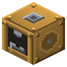

Паровой патронный пресс


Правый клик матрицей — сменить калибр.
Правый клик матрицей — сменить калибр. Shift + пустая рука — забрать патроны. Крутится и от шкива, без пара.
Параметры
| Эпоха | 2 — Пар и механика |
|---|---|
| Многоблок | нет |
| Привод | вал 2 л.с., пар |
| Баки, mB | 4000 |
| что делает | патроны (гильза + пуля + капсюль + навеска пороха) |
| энергия на входе | пар 100 mB или вал 2 |
| из чего | бронзовые листы и шестерни, стальной лист, поршень, втулка RC |
| л.с. (Патронный пресс) | 2 |
Числа
| патронный пресс от вала | 2 л.с. |
|---|---|
| патронный пресс: пар | 100 mB |
| патронный пресс: такт | 60 тик |
Кто кормит
- Бездымный порох ← Химический реактор, Реактор высокого давления
- steam ← Парогенератор АЭС
- вал ← Паровая машина, Паровая машина высокого давления (трансмиссия)
Кого кормит
- Промежуточный патрон → Конструкторское бюро
- Винтовочный патрон → Конструкторское бюро
Как устроено (из кода)
Паровой патронный пресс. Калибр задаёт матрица (правый клик матрицей - поставить/сменить). Партия 3 с и 100 mB пара, 4 патрона. Гильза, пуля и капсюль - на каждый патрон (из ничего патроны не берутся), а пороха - мерная навеска: в 4 раза меньше, чем при ручном снаряжении (винтовочный - в 3 раза): пистолетный: 4 гильзы + 4 свинц. пули + 4 капсюля + 1 порох (любой) -> 4 винтовочный: 4 гильзы + 4 оболочечные + 4 капсюля + 2 бездымных -> 4 (бездымный порох = 800 м/с: голый свинец срывает нарезы и освинцовывает ствол - только в оболочке) промежуточный: 4 гильзы + 4 оболочечные + 4 капсюля + 1 бездымный -> 4 ружейный: 2 бумаги + 4 гильзы + 2 свинц. пули (дробь) + 4 капсюля + 1 порох -> 4 Слоты: 0 матрица, 1 гильзы, 2 свинц. пули, 3 оболочечные, 4 капсюли, 5 дымный, 6 бездымный, 7 бумага, 8 выход.